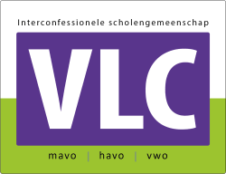

Mijn naam is Tyson van der Heijden en ik ben 14 jaar oud, ik ben geboren op 25 november 2010.
De school waar ik op ben begonnen is basisschool het kompas, daar heb ik het heel erg naar mijn zin gehad.
Na 8 jaar (wat logisch is) ging ik naar het vlietland college, ik had nooit gedacht dat ik het zo leuk zo hebben hier.

Hobby's
Ik zit op voetbal, dat doe ik al bijna mijn hele leven bij voorschoten 97.
Ik ben begonnen als veldspeler, maar 3 jaar geleden ben ik overgestapt naar keeper.